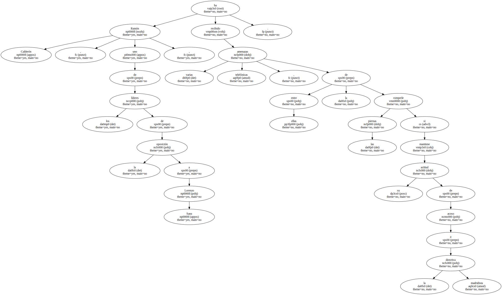
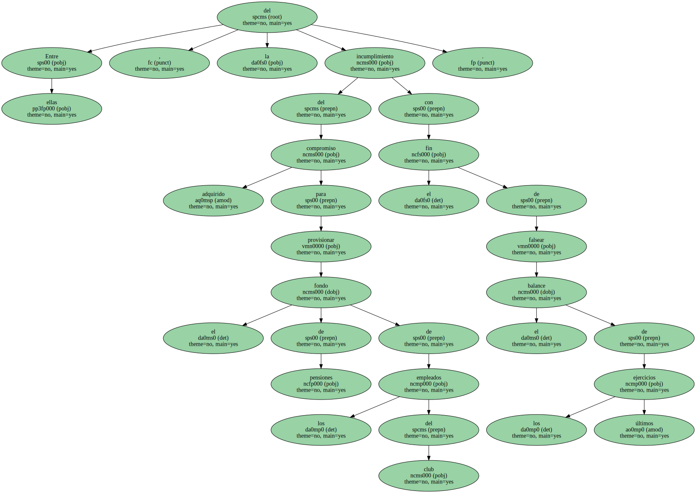
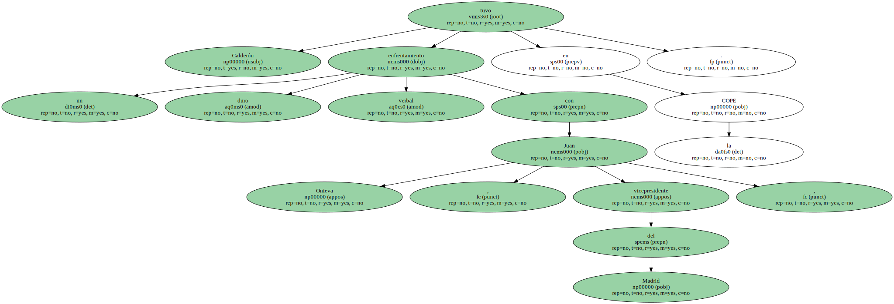
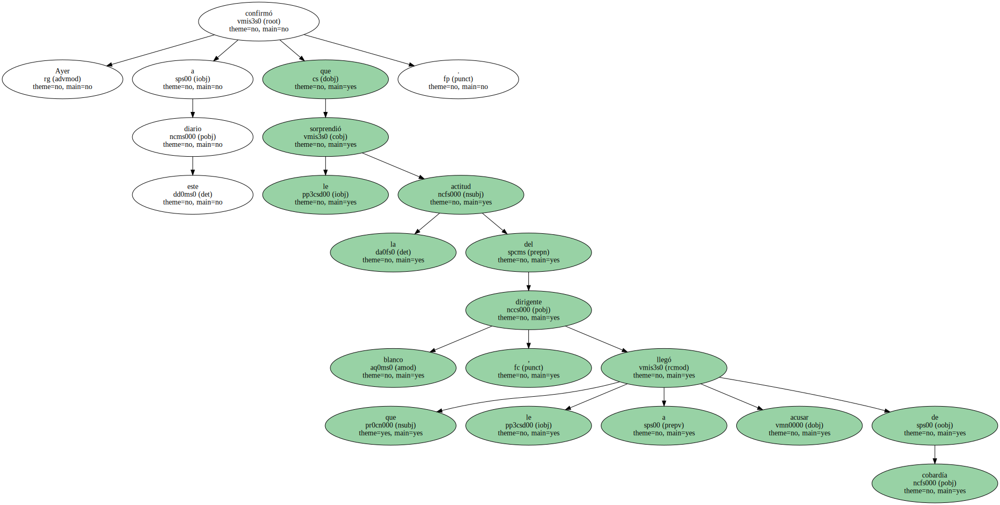
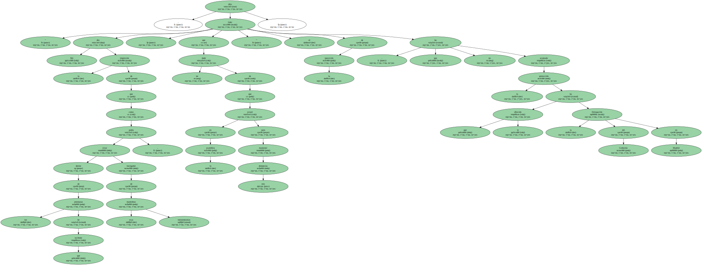

Ramón Calderón , uno de los líderes de la oposición a Lorenzo Sanz , ha recibido varias amenazas telefónicas , entre ellas la de romperle las piernas si mantiene su actitud de acoso a la directiva madridista.
Calderón , amigo personal de Florentino Pérez y miembro de la Asociación para la Defensa del Patrimonio del Real Madrid , ha denunciado en los últimos días nuevas irregularidades en las cuentas que la junta blanca presentará a los compromisarios.

Entre ellas , la del incumplimiento del compromiso adquirido para provisionar el fondo de pensiones de los empleados del club con el fin de falsear el balance de los últimos ejercicios.
Calderón tuvo un duro enfrentamiento verbal con Juan Onieva , vicepresidente del Madrid , en la COPE.
Ayer confirmó a este diario que le sorprendió la actitud del dirigente blanco , que le llegó a acusar de cobardía.
" Me dio la impresión de que podía estar detrás de las amenazas que he recibido , como instigador de esas maniobras intimidatorias . que no dude de que estaré en la asamblea para mantener mis denuncias " , dijo el líder de la oposición , que no ha aceptado la protección que le ha ofrecido la Delegación del Gobierno en Madrid.
